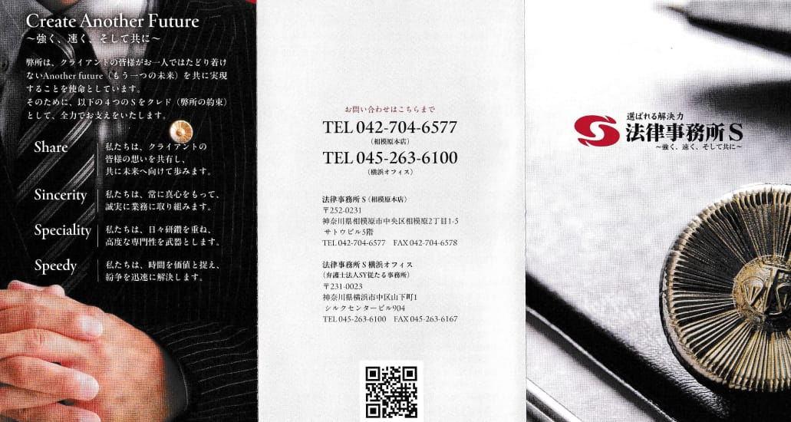
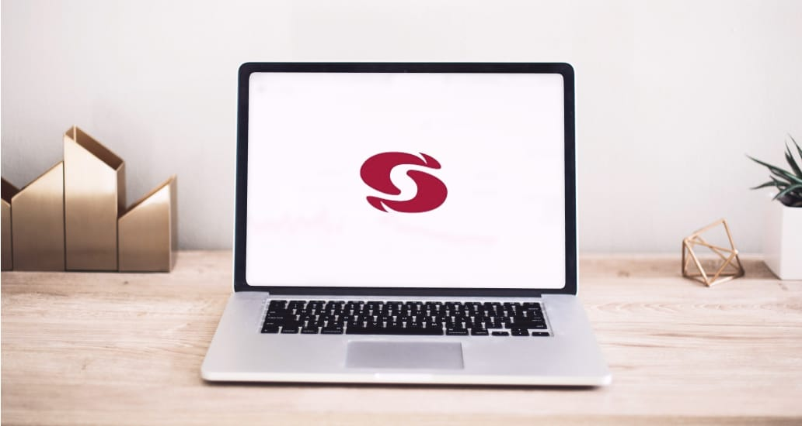

取扱業務 顧問弁護士
たった月3万3,000円（税込）であなたの会社に優秀な法務部ができます
中小企業にこそ優秀な法務部を 実務経験豊富な弁護士が、 あなたの会社を守ります
現代の企業経営において、取引先との契約問題や従業員とのトラブルなど、法的なリスクはいたるところに潜んでいます。
こういったトラブルは時間が経てば経つほど複雑化し、解決が難しくなるものがほとんどです。そのため、日頃からリスク回避の対策をし、トラブル発生時には迅速に対応することが大切です。
しかし、中小企業の多くは法務部を設置しておらず、多忙な経営陣はその対策に遅れをとってしまうというのが実情です。
そんな中小企業にこそ、顧問弁護士という選択が最適です。
自社に法務部を設置するには、人件費をはじめ手間もコストもかかりますが、顧問弁護士契約には、そのような心配はありません。企業法務に精通した弁護士チームが、あなたの会社を法的リスクから守ります。
顧問弁護士として、私たちは次のとおり行動します
-
01 Speedy 迅速に対応します
経営には何よりもまず、迅速な判断が求められます。私たちはクレド「speedy」を実践し、クライアント様のご相談に対して、電話・メール・チャットアプリ等を駆使して、迅速に対応します。
-
02 Share きちんとお話を伺います
聞かれたことに答えるだけなら、AIと変わりません。私たちはクレド「share」を実践し、クライアント様の思いや現状を正確に把握し、的確なサービスを提供します。
-
03 Sincerity 真摯に対応します
相談することが億劫になれば、せっかくの顧問弁護士も役に立ちません。私たちはクライアント様に真摯に対応し、末永く良い関係性を築きます。
-
04 Speciality 向上を続けます
弁護士業務のみならず各弁護士の多様な経験を共有し、あらゆる問題に応じられる高度な専門性を確保します。
このような方はぜひ一度、ご相談ください
- 取引先との法的トラブルを相談できる人や部署がない
- 社内外の契約を締結する時に、問題がないかチェックしてほしい
- 顧客からの理不尽なクレームに悩んでいる
- 債権を回収したいが、方法がわからない
- 従業員から未払いの残業代があると苦情が来ている
- 社内のコンプライアンスを見直したい
顧問弁護士を
契約するメリット
顧問弁護士を契約しておくことで、法的リスクの事前防止や迅速な対応を可能にし、
トラブル発生時のコスト削減やビジネスの信頼性向上に貢献します。
法律問題が発生する前に備えておくことが、安定した事業運営に大切です。
-
トラブルが起きる前に
未然に防ぐ企業活動における法的リスクを事前に評価し、トラブルを未然に防ぎます。
- 契約書チェック
- コンプライアンス体制の構築支援
- 法的リスクの評価と予防策の提案
-
トラブル発生時には
迅速なサポートトラブル発生時には、迅速かつ適切な対応策をアドバイスします。
- 企業法務に基づくアドバイス
- 労務問題の対応とアドバイス
-
事件化した場合にも
早期解決事前の事業理解があり、早期の着手が可能なため、最善の解決策を迅速に導きます。
- 債権回収のサポート
- 取引先との紛争解決
- 裁判や仲裁手続の代理
-
法的アドバイスが
受けられる各種手続きや企業活動における法的アドバイスやご相談に応じます。
- 事業承継や企業再編の支援
- 各種許認可手続のサポート
- 研修やセミナーの実施
※ご契約プランにより、契約料金に含まれないものがございます。別途料金が発生する場合には、プラン別の割引料金にて対応させていただきます。
弁護士が取れる解決方法
個人の場合
-
1. 任意整理
債権者と直接交渉し、利息や返済期間の見直しを行います。
メリット デメリット 裁判所を通さず、比較的簡単に手続きが進められます。
家や車などを手放さずに済むケースもあります。債務の一部が免除されるわけではなく、全額返済が前提です。 -
2. 個人再生
裁判所に申し立てを行い、借金を大幅に減額してもらい、3〜5年で分割返済を行います。
メリット デメリット 自己破産よりも多くの財産を保有したまま
返済計画を立てることが可能です。安定した収入が必要です。
再生計画が認可されるまでの手続きが複雑です。 -
3. 自己破産
裁判所に申し立てを行い、借金を免除してもらう手続きです。
メリット デメリット すべての債務が免除されるため、借金の返済義務がなくなります。 一定の財産を手放さなければなりません。信用情報に記録が残り、
一定期間は借入が難しくなります。
法人の場合
-
1. 任意整理
会社の債権者と直接交渉し、債務の減額や返済期間の延長を図ります。
メリット デメリット 事業を継続しながら債務の整理ができます。
裁判所を通さないため、手続きが簡便です。債権者全員の同意が必要であり、
交渉が不調に終わるリスクがあります。 -
2. 個人再生
裁判所に申し立てを行い、再生計画を立てて債務の減額や返済条件の変更を行います。
メリット デメリット 会社の経営を維持しながら、再建を目指すことができます。
従業員の雇用を守ることが可能です。申立てから再生計画の認可まで時間がかかり、手続きが複雑です。
再生計画の遂行には安定した収入が必要です。 -
3. 自己破産
裁判所に破産を申し立て、債務の免除と会社の清算を行います。
メリット デメリット 債務の返済義務がなくなり、債務超過の状態から解放されます。
最終的な解決策として効果的です。会社は清算され、事業は停止します。
従業員は解雇され、信用情報にも影響が及びます。
法律事務所Sが選ばれる理由
数ある法律事務所の中から、弊所がお客様に選ばれている主な理由は次の通りです。
-
理由01
県内最大規模の豊富な実績
令和5年1月1日現在、法律顧問185社、中小企業の相談実績2000件を超えるなど、県内有数の豊富な実績を誇ります
-
理由02
専門性の高い弁護士・
リーガルスタッフ中小企業法務、不動産、債権回収、倒産業務、事業承継、著作権などに精通した弁護士が在籍。また、日弁連事務職員検定試験や行政書士試験を通過した専門スタッフもおり、チームでサポートいたします。
-
理由03
サービス面での高い評価
サービス面でも高い評価を頂き、2017年には経済産業省「おもてなし規格認証」で金認証を取得しております。
-
理由04
法的リスクの早期発見・予防と法務人材コストの削減
豊富な経験と専門性で、法的リスクの早期発見と予防、法務人材コストの削減を実現します。
-
理由05
最新テクノロジーの導入
AI契約書レビューツール「LegalForce」を導入し、迅速かつ正確な契約書レビューを提供。
-
理由06
SDGs推進をサポート
SDGsを推進する県内初の法律事務所として、自事務所での取り組みはもちろん、企業のSDGs推進もサポートしております。
-
理由07
補助金・助成金獲得サポート
中小企業診断士資格を持つ弁護士が所属しており、各種補助金・助成金の活用を支援。厚生労働省や経済産業省の制度を活用したサポートを提供します。
-
理由08
福利厚生・採用促進への活用
顧問契約企業の従業員様の個人的な相談にも初回無料で対応。従業員の福利厚生や採用促進にも喜ばれています。
-
理由09
ニーズに応じた3つのプラン
事業フェーズや業種、ニーズ、予算等に応じてお選びいただけるよう、3つの契約プランをご用意しております。
法律事務所Sが提供する3つのサポート
-
01 遺言
財産や権利を将来どのように分配するかを生前に決めておくもので、遺族間の争いを防ぐ重要な手段です。
-
02 信託
財産管理を信頼できる第三者や機関に委託する制度。将来ご自身が管理できなくなった場合でも、財産が適切に活用されるようにする仕組みです。
-
03 後見
判断能力が低下した方の生活や財産を保護するために、信頼できる人や弁護士が代わりに財産管理や一部の身上監護を行います。
-
Support 01 遺言
亡くなった後の財産の帰属を定める
財産を特定の相続人に残したい、相続人間で連絡が取れていない、などの事情がある場合、
亡くなった後で遺産をめぐる紛争が相続人間に発生する危険性があります。
相続人間で遺産をめぐる争いを防止するためには、遺言を作成しておくことが最も効果的です。また、相続人はいないので、
残った遺産は特定の活動を行っている団体に寄付したい、というご意思の場合にも、遺言の作成が有効です。弊所では、遺言を残される方のご意思を尊重し、丁寧なヒアリングを行い、その意思を実現すべく、遺言作成をサポートします。
遺言執行者への就任も可能です。 -
Support 02 信託
親族に財産の管理を託すには、民事信託の利用が適切です
判断能力がある人が信頼できる人に財産を託し、その人のために財産を管理や処分をする制度です。
信託銀行が取り扱う信託商品や投資信託（商事信託）とは異なり、営利を目的とせず、家族間でおこなうことが特徴です。民事信託のメリット
- 財産の承継を自由に設定できる
- 二次相続まで考慮して財産の承継者を決めることができる
- 財産管理処分権を一人に集約できるため、管理する人を誰にするかでもめる可能性が低くなる
- 共有名義の不動産でも、一人の意見で売却することができる
民事信託の受託者には、特別な資格は必要ありません。家族はもちろん、他の親戚や友人であっても受託者になれます。
複数人や法人でも受託者への就任が可能です。弊所では、信託の設計から受託者の選定、契約の締結まで、全てのプロセスをサポートし、ご本人とその家族の安全を守ります。 -
Support 03 後見
生活と財産管理を支援する後見制度の利用
判断能力が低下した高齢者が、不要な契約や高額な契約をしてしまう、施設の入所に支障が生じる、などの例が後を絶ちません。このような判断能力が衰えた高齢者の皆様をサポートするのが後見制度です。すでに判断能力が衰えている方と、将来的に判断能力が衰えた場合に備える方とで、それぞれ対応が異なります。
-
既に判断能力が低下
法定後見事件
既に精神上の障害があり、判断能力がない又は不十分な方に対し、裁判所が本人の判断能力低下の程度に応じて、成年後見人・保佐人・補助人を選任する制度。
-
将来に備えたい
任意後見事件
予め本人と任意後見受任者との間で、将来本人の判断能力が不十分になった場合に受任者が後見人に就任する旨の契約を公正証書で作成する制度。
-
既に判断能力が低下
契約書が貴社のビジネス活動に確実にプラスとなるよう
企業法務のスペシャリストがサポートいたします
契約書は、企業活動における重要な基盤です。法律事務所Sでは、取引基本契約書、業務委託契約書、秘密保持契約書、フランチャイズ契約書など、さまざまな契約書について、専門的な視点でチェックを行い、より良い契約内容を提案します。
- 01法律適合性の確認
- 契約書が適用される法律にしっかりと適合しているかを確認し、法的なリスクを回避します。最新の法改正にも対応し、貴社が法的トラブルに巻き込まれないようにサポートします。
- 02トラブル対応の強化
- 契約履行中に発生しうるトラブルや紛争に備え、問題が生じた際に適切に対処できる条項が含まれているかを確認。リスクヘッジのために、将来の予期しない事態にも対応できる内容を整えます。
- 03不利な条項の排除
- 貴社にとって不利な条項が契約書に含まれていないかを徹底的にチェックし、必要に応じて修正案を提示します。公正でバランスの取れた契約を構築することで、長期的に有利な関係を築きます。
- 04文言の明確化
- 曖昧な文言や解釈の余地が残る表現は、後々のトラブルの原因となることがあります。弁護士が契約書の文言を精査し、誤解を招かない明確な表現に修正することで、契約当事者間の認識のズレを防ぎます。
実現までの流れ
ご相談からM&A・事業承継実現までの流れをご紹介します。
- Step 01
-
法律相談
まずは法律相談へお申し込みください。
事業内容の把握と現状の整理、ご依頼者様のご希望などをうかがいます。
- Step 02
-
スキームの検討
事業承継には、親族内承継または従業員への承継、第三者承継（M&A）といった大きく分けて3つの方法がございます。現状とご要望から最適なスキームを検討いたします。
- Step 03
-
相手先候補の選定
最適な条件を満たす相手先の候補を選定いたします。弊所独自のネットワークを活かし、譲受企業を見つけられるケースも数多くございます。
- Step 04
-
条件交渉
候補企業が決定しましたら、条件交渉を行います。弊所のM&Aに精通した弁護士が、買収価格や支払い条件、従業員の処遇など、より希望に近い合意が得られるよう交渉を支援いたします。
- Step 05
-
基本合意書の締結
交渉により双方の合意が得られましたら、基本合意書を締結いたします。
- Step 06
-
法的・財務チェック
弁護士や会計士が対象企業の法的および財務状況を詳細に調査し、リスクや問題点を洗い出します。
- Step 07
-
最終契約書の締結
すべての調査結果を踏まえ、最終的な契約条件を確定し、正式な契約書を作成・締結してM&Aを完了します。
費用について
契約書チェックの費用は定型契約書の場合、5万5000円（税込）から承っております。
詳細な費用は、ご契約前にお見積もりを作成いたします。
| 契約書チェック（定型契約書） | 5万5000円〜/1通 |
| ※契約書の種別や内容により変動いたします。 ※この他、弁護士相談料や実費が発生するケースもございます。 ※同時に複数の契約書チェックをご依頼いただいた場合の費用設定もございます。詳しくは「弁護士費用」のページをご覧ください。 |
|
プランについて
顧問契約のプランには、主にご相談のみやこれから発展する企業様向けのスタートアッププラン、
不動産業・建設業・高齢者施設などに広く選ばれているスタンダードプラン、
債権回収案件が多い企業様に選ばれているプレミアムプランの3種類がございます。
Startup スタートアッププラン
33,000円～
54,999円 |
Standard スタートアッププラン
55,000円～
109,999円 |
Premium プレミアムプラン
110,000円〜
|
|
| 法律相談 | 何回でも可 | 何回でも可 | 何回でも可 |
| 優先予約・時間外相談 | 〇 | 〇 | 〇 |
| 携帯・Mail相談 | 〇 | 〇 | 〇 |
| 事件ディスカウント | 10% | 15% | 20% |
| 小規模Ｇ企業・従業員の相談 | 初回無料 | 初回無料 | 何回でも無料 |
| 内容証明等・簡易調査・交渉 | × （別途料金にて対応） |
〇 | 〇 （一部簡裁訴訟まで行う） |
士業様向けの特別プランについて
士業の皆様は一定の専門知識をお持ちのため、
その規模に応じて月額2万2000円（税込）から法律顧問契約をご利用いただけます。
ご契約内容
ご契約で提供する主な役務は以下の通りです。
- 1．法律相談
- ご契約期間中は、他のご依頼者様に優先して予約ができ、何回でも法律相談が可能です。携帯電話、メール、LINE等でのご相談も可能です。
- 2．グループ企業・従業員様のご相談
- グループ企業（代表取締役を兼任又は資本提携がある会社）のうち年商1億円以下の企業様、従業員様の個人的なご相談も（初回）無料です。従業員様の福利厚生・採用促進として喜ばれております（ご契約者様と利益相反するご相談はお受けしかねます）。
- 3．事件ディスカウント
- 事件業務のご依頼を別にお受けする場合、スタートアッププランは10％、スタンダードプランは15％、プレミアムプランは20％の費用を減額します。
- 4．簡易書面や内容証明郵便作成・簡易調査・簡易交渉（簡易業務）
- スタンダードプラン以上のご契約者様は、A4一枚程度の定型書類、内容証明郵便の作成・発送や、簡易な調査、簡易な交渉の電話1～2回まで顧問契約でご対応します（継続的な対応、契約書作成等は別契約となります。また、実費は頂戴いたします）。 プレミアムプランでは、事案単純な簡易裁判所の訴訟も行います
よくある質問
- 顧問弁護士の具体的な内容がよく分かりません。何をしてくれるのですか？
- 顧問弁護士の業務は、きめ細やかなオーダーメイドが可能です。
頻繁に契約書を交わす企業であれば、契約書のチェックを主たる内容としたり、会員を多く抱えている企業であれば、顧客サービスの一環として各会員がお気軽に弁護士に法律相談できるようにする等も可能です。ぜひ一度、ご相談下さい。
- XXXXXXXXXXXXXXXXXXXXXXXXXX？
- 可能です。ただし、事件の当事者でないと分からない事柄が事件のポイントを握っていることも多いため、正確なご回答のためにも、可能な限り、ご本人の同席をお願い致します。
また、事件を受任する際には、ご本人と直接お会いし、意思確認及び本人確認を行わせて頂きますので、ご了承下さい。
- XXXXXXXXXXXXXXXXXXXXXXXXXX？
- ご安心下さい。弊所では費用を明確にしております。また、お見積もりは無料で承っておりますので、お気軽にお申し出下さい。企業様の法律顧問契約についても、お見積もりを作成いたします。
- XXXXXXXXXXXXXXXXXXXXXXXXXX？
- ご安心下さい。弊所では費用を明確にしております。また、お見積もりは無料で承っておりますので、お気軽にお申し出下さい。企業様の法律顧問契約についても、お見積もりを作成いたします。
- XXXXXXXXXXXXXXXXXXXXXXXXXX？
- 可能です。ただし、事件の当事者でないと分からない事柄が事件のポイントを握っていることも多いため、正確なご回答のためにも、可能な限り、ご本人の同席をお願い致します。
また、事件を受任する際には、ご本人と直接お会いし、意思確認及び本人確認を行わせて頂きますので、ご了承下さい。
- XXXXXXXXXXXXXXXXXXXXXXXXXX？
- ご安心下さい。弊所では費用を明確にしております。また、お見積もりは無料で承っておりますので、お気軽にお申し出下さい。企業様の法律顧問契約についても、お見積もりを作成いたします。
- XXXXXXXXXXXXXXXXXXXXXXXXXX？
- ご安心下さい。弊所では費用を明確にしております。また、お見積もりは無料で承っておりますので、お気軽にお申し出下さい。企業様の法律顧問契約についても、お見積もりを作成いたします。
- XXXXXXXXXXXXXXXXXXXXXXXXXX？
- 可能です。ただし、事件の当事者でないと分からない事柄が事件のポイントを握っていることも多いため、正確なご回答のためにも、可能な限り、ご本人の同席をお願い致します。
また、事件を受任する際には、ご本人と直接お会いし、意思確認及び本人確認を行わせて頂きますので、ご了承下さい。
- XXXXXXXXXXXXXXXXXXXXXXXXXX？
- ご安心下さい。弊所では費用を明確にしております。また、お見積もりは無料で承っておりますので、お気軽にお申し出下さい。企業様の法律顧問契約についても、お見積もりを作成いたします。
- XXXXXXXXXXXXXXXXXXXXXXXXXX？
- ご安心下さい。弊所では費用を明確にしております。また、お見積もりは無料で承っておりますので、お気軽にお申し出下さい。企業様の法律顧問契約についても、お見積もりを作成いたします。
関連コラム
他の記事を見る-
顧問弁護士をご検討の経営者様、ご担当者様へ
詳しい資料を差し上げております
顧問弁護士についてもっとお知りになりたい方へ、弊所のプランや業務内容、ご利用の流れ等を掲載した、詳しい資料を差し上げております。
法律契約顧問契約のご案内法律顧問契約のご案内リーフレットダウンロードはこちら
リーフレットのダウンロードはこちら
-
顧問先の皆様へ
限定コンテンツを公開中
法律顧問契約を結んでいただいている方々へ向けて企業経営・企業法務に関する有益な情報が満載のコンテンツ「THE S NEWS」をお届けしております。
THE S NEWSTHE S NEWS法律顧問先の限定コンテンツ
法律顧問先の限定コンテンツ